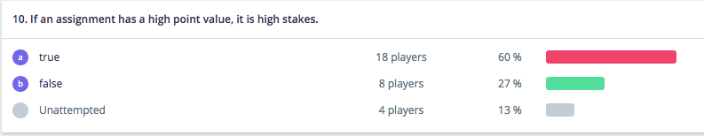

Enter the stats for the question here

Possible answers:
correct answer: False
This one is a little bit of a trick question. Scoring of an exam and how it fits into your course is actually part of the assessment design, not its overall function. High and Low stakes doesn't actually have anything to do with the test design itself. This is one that many people don't realize, because the meaning of the terms over time has travelled far from their original definitions.
High Stakes vs. Low StakesSo, in education, the 'stakes' refer to the results of some sort of evaluation and what you do with them. Not the evaluation itself, or the parts that make up the evaluation, like how many points you have attached to it. So 'high stakes' refers to an evaluation where the result of the evaluation will result in a change in a student's path. We often call these "gatekeepers". Meet the metric on a high stakes exam, and you continue on your path. Fail to meet it, and you might find yourself denied advancement on the path or sent back to a previous point on the path. Low stakes activities do not serve as gatekeepers. Failure to meet the metric on these will not derail your progress on a path outright. You can often fail to meet the metric of a low stakes measure and still continue on a given path.
A “low-stakes test” would be used to measure academic achievement, identify learning problems, or inform instructional adjustments, among other purposes. What distinguishes a high-stakes test from a low-stakes test is not its form (how the test is designed) but its function (how the results are used). For example, if test results are used to determine an important outcome, such as whether a student receives a high school diploma, the test would be considered a high-stakes test regardless of whether it’s a multiple-choice exam, an oral exam, or an essay exam. Low-stakes tests generally carry no significant or public consequences—the results typically matter far more to an individual teacher or student than to anyone else—and scores are not used to burnish or tarnish the reputation of teachers or schools.(edglossary.org)